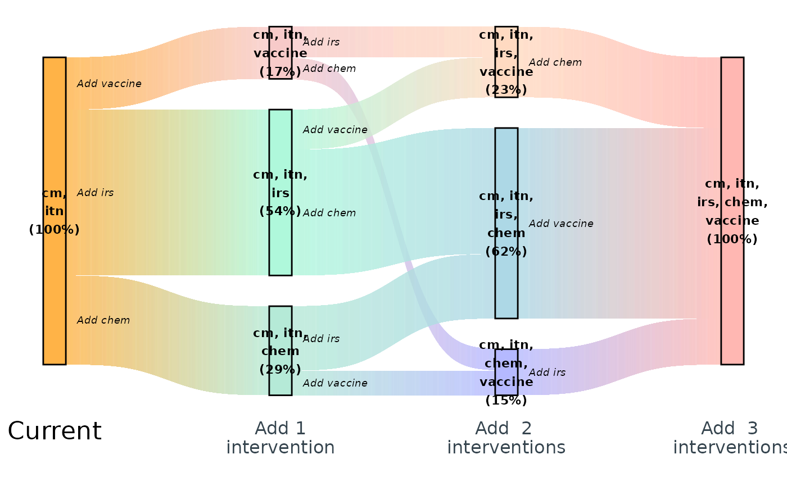

Welcome
The currentsee package simulates transitions between malaria intervention packages and renders them as richly annotated Sankey diagrams. This vignette takes you from simulation to interactive exploration so you can explore the full workflow in just a few lines of code.
For package users the usual library call works:
1. Simulate transitions
We begin by simulating our data and adding a mock grouping variable “seasonality”
set.seed(1)
df <- simulate(100) |>
mutate(
season = sample(c("perennial", "seasonal"), 1),
.by = "id"
)
dplyr::glimpse(df)
#> Rows: 100
#> Columns: 8
#> $ id <int> 1, 2, 3, 4, 5, 6, 7, 8, 9, 10, 11, 12, 13, 14, 15, 16, 17, 18,…
#> $ `-1` <chr> "cm", "cm", "cm", "cm", "cm", "cm", "cm", "cm", "cm", "cm", "c…
#> $ `0` <chr> "cm, itn", "cm, itn", "cm, itn", "cm, itn", "cm, itn", "cm, it…
#> $ `1` <chr> "cm, itn, irs", "cm, itn, vaccine", "cm, itn, irs", "cm, itn, …
#> $ `2` <chr> "cm, itn, irs, chem", "cm, itn, chem, vaccine", "cm, itn, irs,…
#> $ `3` <chr> "cm, itn, irs, chem, vaccine", "cm, itn, irs, chem, vaccine", …
#> $ current <chr> "cm, itn", "cm, itn", "cm, itn", "cm, itn", "cm, itn", "cm, it…
#> $ season <chr> "perennial", "perennial", "perennial", "seasonal", "perennial"…The required columns include:
- step An integer vector. The current package is 0, steps down are negative and up are positive.
- package A character string indicating the name of the package specified as a comma separated concatenation of the interventions in the package. When rendering the sankey labels, individual interventions are stacked vertically.
- changed A character string indication which intervention is added or removed at each step.
- id A unqiue, interger identifier for each pathway
Additional columns are grouping variables. At a minimum, you will likely want to include the current package as a grouping variable.
The resulting data.frame records every step in each trajectory, including the package string and which intervention changed.
2. Create a static Sankey diagram
Using our simulated inputs we can render an interactive Sankey diagram directly in the RStudio viewer or an HTML document.
make_sankey(
df, "up"
)
The widget honours the colour palette produced by
make_colours() and includes rich tooltips describing each
transition.
4. Launch the exploration Shiny app
To explore the same data with filtering controls, launch the bundled Shiny app. This opens in your default browser and allows you to subset the trajectories by any grouping columns you provide.
launch_step_app(df[,c("-1", "0", "1", "2", "3", "season", "current")])The app keeps the same Sankey rendering but adds dropdown selectors
for the season column, letting you compare perennial and
seasonal pathways side by side.